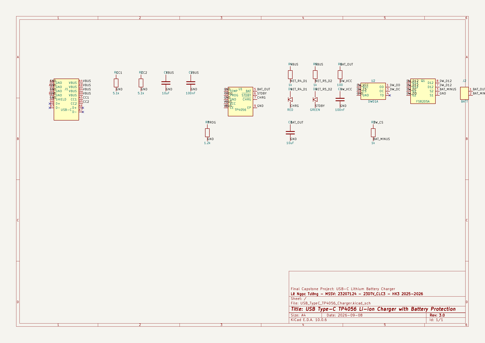
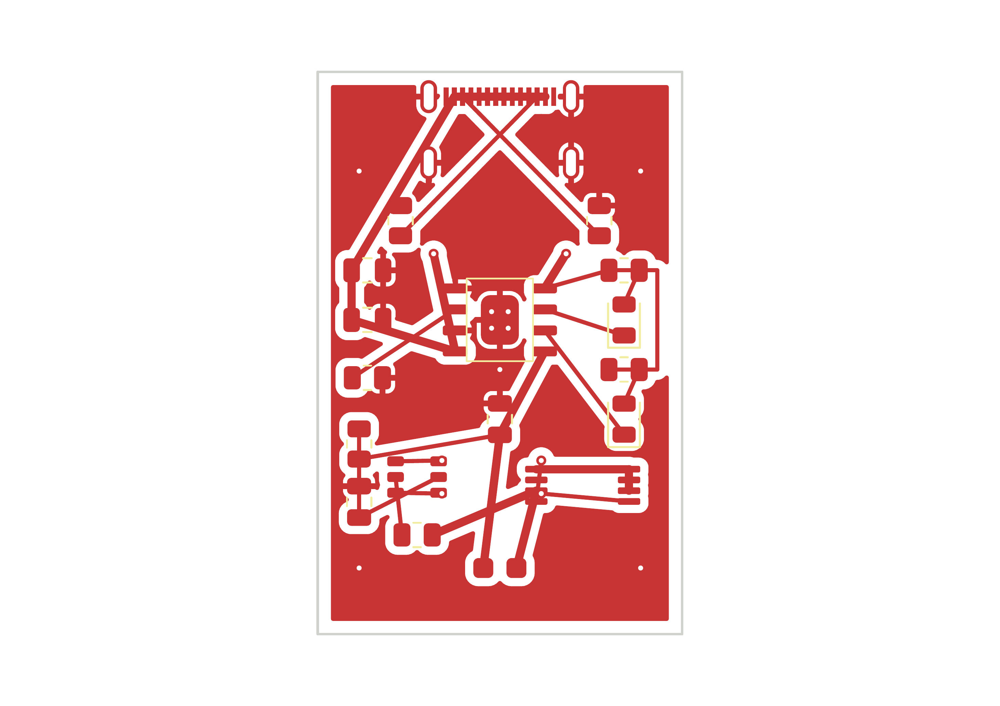
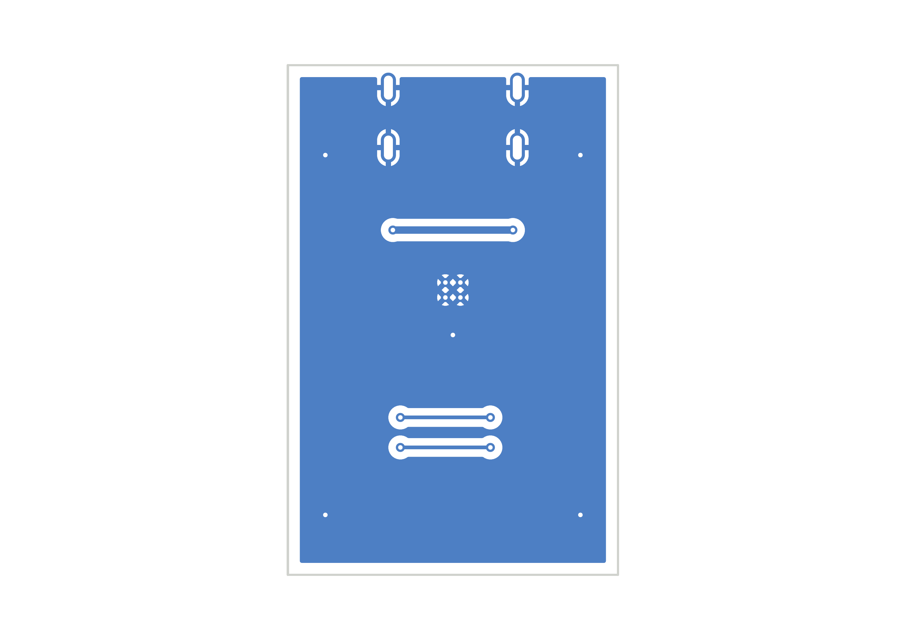
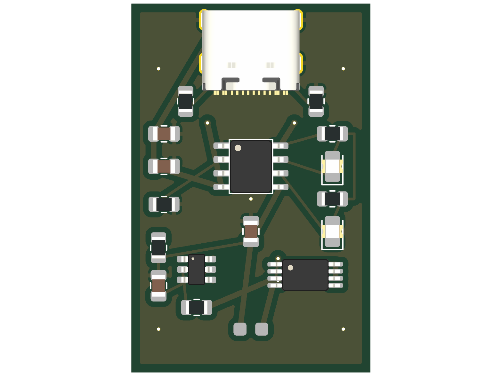
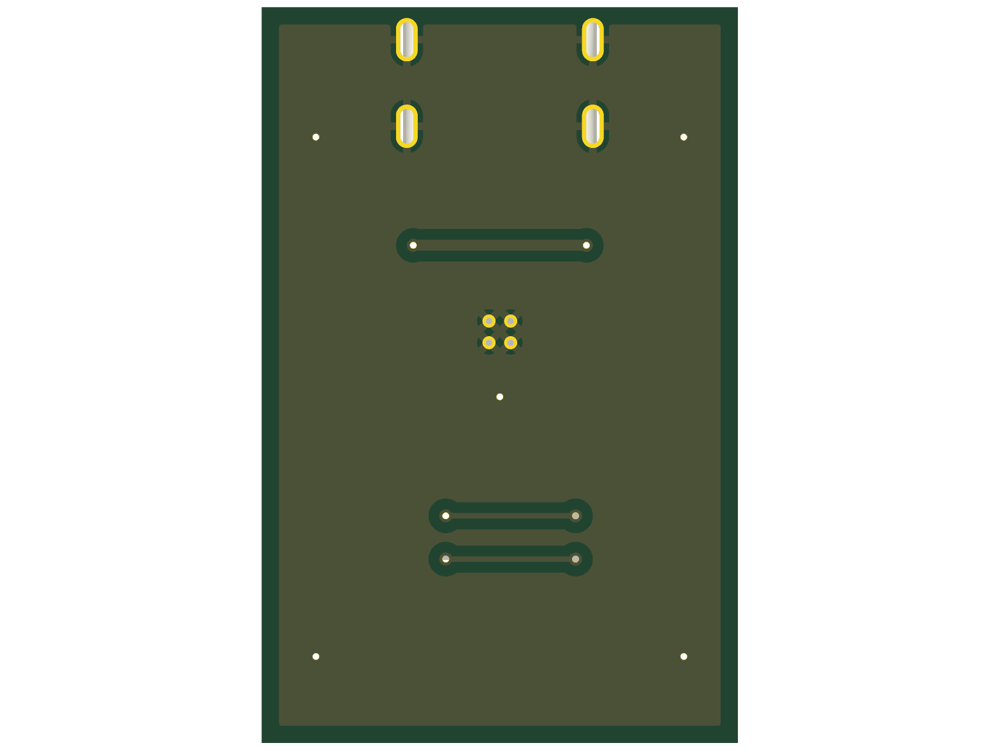

| Sinh viên thực hiện: | Lê Ngọc Tường |
| Mã số sinh viên: | 23207124 |
| Lớp sinh viên: | 23DTV_CLC3 |
| Mã đề tài & Nhóm: | Đồ án cuối kỳ - Khóa Hè 2025-2026 |
Mạch sạc pin Lithium-Ion tích hợp ngõ vào USB Type-C được thiết kế dựa trên tiêu chuẩn công nghiệp hiện đại, tích hợp trọn vẹn kiến thức thu được từ chuỗi 8 bài thực hành (từ vẽ Schematic, tạo Symbol/Footprint chuẩn IPC, layout phân khối nguồn, đổ đồng GND tản nhiệt, đến xuất dữ liệu Gerber/Drill).

| Reference | Value | Footprint | Số lượng | Chức năng kỹ thuật trong mạch |
|---|---|---|---|---|
| U1 | TP4056 | SOIC-8-EP (Thermal Pad) | 1 | IC điều khiển sạc pin Li-Ion CC/CV 1A |
| U2 | DW01A | SOT-23-6 | 1 | IC giám sát và bảo vệ pin quá áp, xả sâu |
| Q1 | FS8205A | TSSOP-8 (Dual N-MOSFET) | 1 | Khóa công tắc điện tử đóng cắt bảo vệ cực âm pin |
| J1 | USB-C 16P | HRO TYPE-C-31-M-12 | 1 | Cổng nhận nguồn nạp DC 5V từ cáp sạc Type-C |
| J2 | BATT PH2.0 | JST PH B2B-PH-SM4-TB | 1 | Đầu cắm kết nối ngõ ra với cell pin Li-Ion 3.7V |
| C1, C3 | 10uF | C_0805_2012Metric | 2 | Tụ lọc ổn định điện áp ngõ vào VBUS và ngõ ra BAT |
| C2, C4 | 100nF | C_0805_2012Metric | 2 | Tụ dập nhiễu gai cao tần ngõ vào và nguồn nuôi DW01A |
| R1, R2 | 5.1k | R_0805_2012Metric | 2 | Điện trở cấu hình kích hoạt nguồn USB-C PD |
| R3 | 1.2k | R_0805_2012Metric | 1 | Điện trở lập trình dòng sạc pin 1A tại chân PROG |
| R4, R5 | 1k | R_0805_2012Metric | 2 | Điện trở phân dòng an toàn cho LED CHRG và STDBY |
| R6 | 100 | R_0805_2012Metric | 1 | Điện trở lọc RC chống xung đột biến cho DW01A VDD |
| R7 | 1k | R_0805_2012Metric | 1 | Điện trở phân áp cảm biến quá dòng tại chân CS |
| D1, D2 | RED, GREEN | LED_0805_2012Metric | 2 | LED hiển thị trạng thái hoạt động nạp pin |
Dựa trên quy chuẩn thiết kế mạch in hiện đại, bo mạch được thiết kế với kích thước cực kỳ tinh gọn 22.0mm x 34.0mm, chuẩn công nghệ 2 lớp đồng (1.6mm FR4, 35um đồng).


Nhằm đáp ứng yêu cầu chất lượng "Zero-Placeholder" và độ tin cậy tuyệt đối trước khi sản xuất hàng loạt, toàn bộ hệ thống đã được thẩm định tự động qua bộ công cụ kiểm thử nghiêm ngặt của KiCad CLI.
pin_not_connected, pin_not_driven). Trạng thái netlist kết nối logic giữa Schematic và PCB đạt mức đồng bộ tuyệt đối 16/16 Net.

Bước cuối cùng trong quy trình thiết kế mạch in chuyên nghiệp là đóng gói toàn bộ dữ liệu thiết kế thành bộ hồ sơ chế tạo đạt chuẩn RS-274X và Excellon Drill để chuyển giao cho các nhà máy gia công PCB (như JLCPCB, PCBWay).
Hệ thống đã xuất hoàn chỉnh toàn bộ 12 lớp gia công tiêu chuẩn vào thư mục gerber/:
USB_TypeC_TP4056_Charger-F_Cu.gtl: Lớp mạch in đồng mặt trên (Top Copper Layer).USB_TypeC_TP4056_Charger-B_Cu.gbl: Lớp mạch in đồng mặt dưới (Bottom Copper Layer).USB_TypeC_TP4056_Charger-F_Mask.gts: Lớp phủ mặt nạ hàn cách điện mặt trên (Top Solder Mask).USB_TypeC_TP4056_Charger-B_Mask.gbs: Lớp phủ mặt nạ hàn cách điện mặt dưới (Bottom Solder Mask).USB_TypeC_TP4056_Charger-F_Silkscreen.gto: Lớp in lụa chữ/ký hiệu linh kiện mặt trên (Top Silkscreen).USB_TypeC_TP4056_Charger-B_Silkscreen.gbo: Lớp in lụa định danh thương hiệu và thông số ở mặt dưới.USB_TypeC_TP4056_Charger-F_Paste.gtp: Lớp chế tạo mặt nạ bôi kem hàn (Solder Paste Stencil) cho máy dán linh kiện tự động SMT.USB_TypeC_TP4056_Charger-Edge_Cuts.gm1: Đường cắt biên dạng cơ khí định hình kích thước bo mạch.USB_TypeC_TP4056_Charger.drl: Tập tin tọa độ và đường kính các mũi khoan lỗ xuyên (Excellon Drill File).| Thông số công nghệ | Giá trị thiết kế | Tiêu chuẩn chế tạo công nghiệp |
|---|---|---|
| Kích thước bo mạch (Dimension) | 22.0 mm x 34.0 mm | Dung sai cắt cơ khí +/- 0.15 mm |
| Số lớp đồng (Number of Layers) | 2 lớp (Top Layer & Bottom Layer) | Chuẩn mạch 2 mặt xuyên lỗ mạ đồng |
| Vật liệu nền (Base Material) | FR-4 Standard Tg 130-140°C | Chuẩn cách điện công nghiệp |
| Độ dày bo hoàn thiện (Thickness) | 1.6 mm | Độ cứng cơ học tối ưu |
| Độ dày đồng (Copper Weight) | 1 oz (35 um) | Chịu dòng liên tục 1A không phát nhiệt |
| Đường kính lỗ khoan nhỏ nhất (Min Drill) | 0.3 mm (Via) | Tiêu chuẩn tiêu hao tiêu chuẩn JLCPCB |
| Xử lý bề mặt (Surface Finish) | HASL with Lead / ENIG | Tăng khả năng bám thiếc hàn dán |